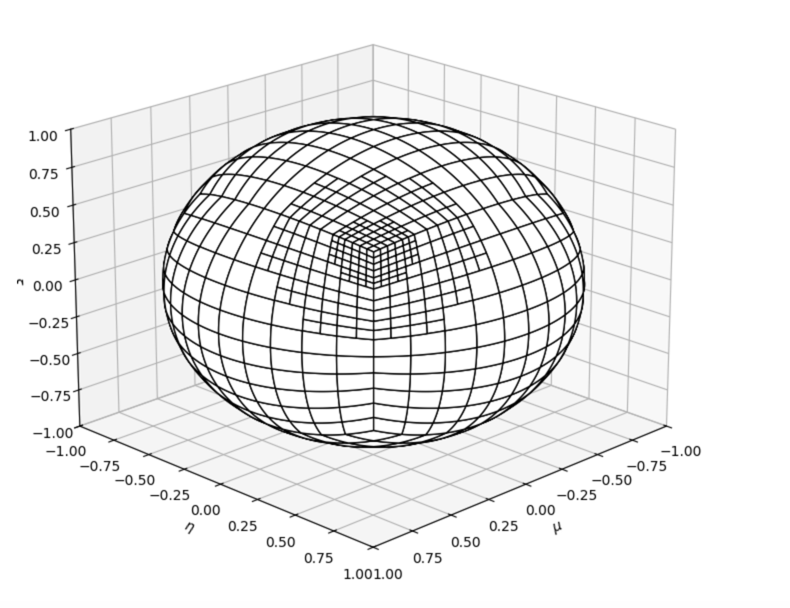
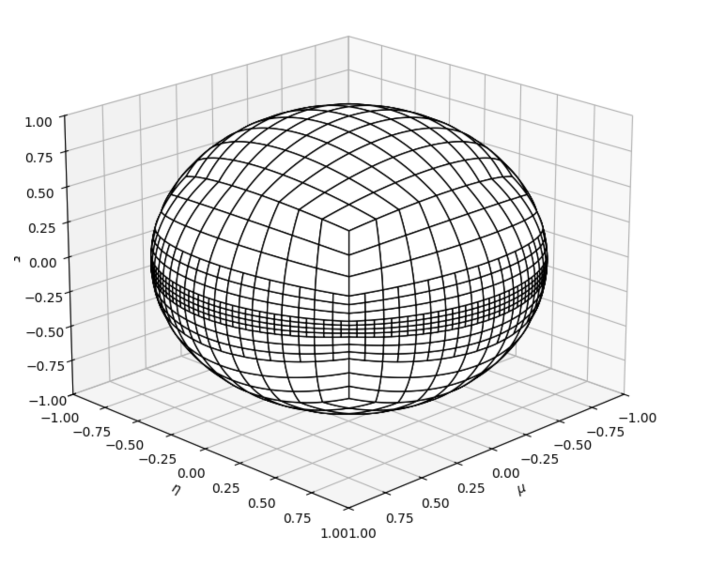

3.3. Simplified Linear Discontinuous Finite Element (LDFE) Quadrature
This set uses the simplified Linear Discontinuous Finite Element (LDFE) quadrature.
To run the code, simply type: jupyter nbconvert --to python --execute <basename>.ipynb.
To convert it to a python file (named <basename>.py), simply type: jupyter nbconvert --to python <basename>.ipynb
[ ]:
import os
import sys
import numpy as np
from mpi4py import MPI
sys.path.append("../..")
from pyopensn.aquad import SLDFESQuadrature
from pyopensn.context import UseColor, Finalize
from pyopensn.math import Vector3
UseColor(False)
3.3.1. Example-1: sLDFE Quadrature parameters
Here, we use the sLDFE Quadrature with 4 levels of uniform refinement, followed by 2 levels of local refinements.
The local refinement happens around point \(P=[1/\sqrt{3},1/\sqrt{3},1/\sqrt{3}]\). The first local refinement is for a cone of \(\theta=30^o\) around that point, and the second refinement for a cone of \(\theta=10^o\).
When the last argument (boolean variable) is False, the refinement of the spherical quadrangles is performed when this condition is met:
where \(O\) is the origin of the sphere, \(P\) is the user-supplied point (if \(\|\vec{OP}\| \ne 1\), that vector is automatically normalized), and \(C\) is the centroid of any spherical quadrangle.
Hence, this leads to local refinement around point \(P\).
[ ]:
# Create a sLDFE quadrature with initial refinement level of 4.
aquad = SLDFESQuadrature(level=4, scattering_order=0)
# Locally refine the quadrature near a given point with a given angular spread.
# 30-degree cone around point [1/np.sqrt(3), 1/np.sqrt(3), 1/np.sqrt(3)]
aquad.LocallyRefine(Vector3(1/np.sqrt(3), 1/np.sqrt(3), 1/np.sqrt(3)), 30.0 * np.pi / 180, False)
# 10-degree cone around point [1/np.sqrt(3), 1/np.sqrt(3), 1/np.sqrt(3)]
aquad.LocallyRefine(Vector3(1/np.sqrt(3), 1/np.sqrt(3), 1/np.sqrt(3)), 10.0 * np.pi / 180, False)
aquad.PrintQuadratureToFile("sLDFE_data1")
3.3.2. Plot the resulting quadrature
We use the plotting routine found in the tools/ folder of OpenSn
[ ]:
# add path to sLDFE plotter
sys.path.append("../../../../tools/ang_quad_plotting")
# import the module
from plot_sldfe_quadrature import plot_sldfe_quadrature
sys.path.append("./")
plot_sldfe_quadrature("sLDFE_data1")
The resulting plot should be obtained

3.3.3. Example-2: sLDFE Quadrature parameters
Here, we use the sLDFE Quadrature with 4 levels of uniform refinement, followed by 2 levels of local refinements.
The local refinement happens around point \(P=[0,0,1]\). The first local refinement is for a cone of \(\theta=15^o\) around that point, and the second refinement for a cone of \(\theta=4^o\).
When the last argument (boolean variable) is True, the refinement of the spherical quadrangles is performed when this condition is met:
Hence, this leads to planar or banded refinement.
[ ]:
# Create a sLDFE quadrature with initial refinement level of 4.
aquad = SLDFESQuadrature(level=4, scattering_order=0)
# Locally refine the quadrature near a given point with a given angular spread.
# 30-degree cone around point [1/np.sqrt(3), 1/np.sqrt(3), 1/np.sqrt(3)]
aquad.LocallyRefine(Vector3(0., 0., 1.), 15.0 * np.pi / 180, True)
# 10-degree cone around point [1/np.sqrt(3), 1/np.sqrt(3), 1/np.sqrt(3)]
aquad.LocallyRefine(Vector3(0., 0., 1.), 4.0 * np.pi / 180, True)
aquad.PrintQuadratureToFile("sLDFE_data2")
3.3.4. Plot the resulting quadrature
We use the plotting routine found in the tools/ folder of OpenSn
[ ]:
plot_sldfe_quadrature("sLDFE_data2")
The resulting plot should be obtained

[ ]:
import glob
# Get a list of all files matching the pattern
files_to_remove = glob.glob("sLDFE_data*.csv")
# Loop through each file and remove it
for file in files_to_remove:
os.remove(file)
print(f"Removed: {file}")
3.3.5. Finalize (for Jupyter Notebook only)
In Python script mode, PyOpenSn automatically handles environment termination. However, this automatic finalization does not occur when running in a Jupyter notebook, so explicit finalization of the environment at the end of the notebook is required. Do not call the finalization in Python script mode, or in console mode.
Note that PyOpenSn’s finalization must be called before MPI’s finalization.
[ ]:
from IPython import get_ipython
def finalize_env():
Finalize()
MPI.Finalize()
ipython_instance = get_ipython()
if ipython_instance is not None:
ipython_instance.events.register("post_execute", finalize_env)